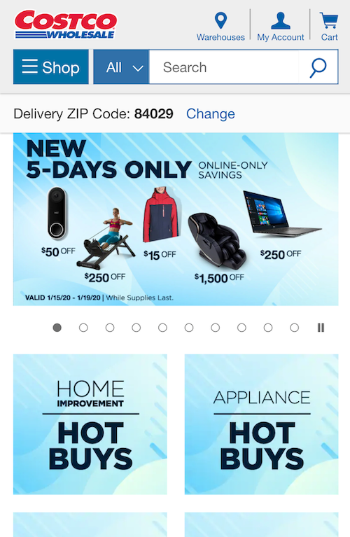
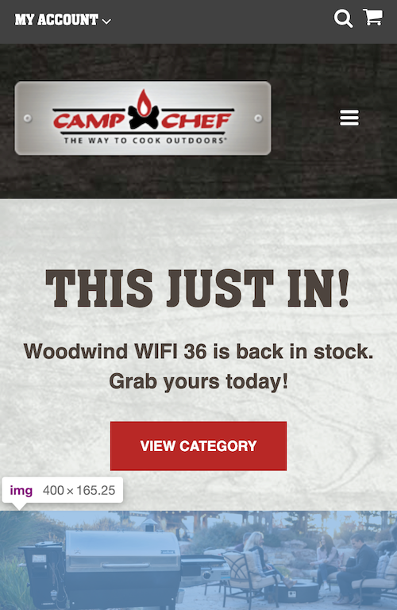
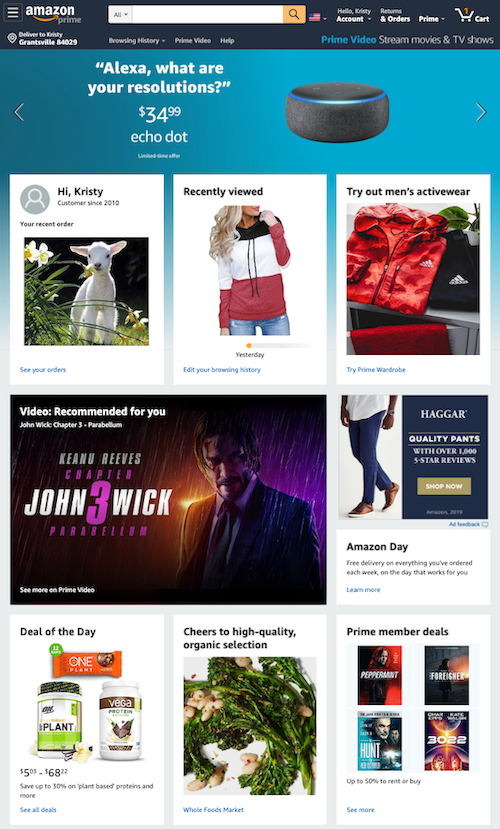

White Space & Clean Design
Costco

"Costco website has a good layout with the right amount of choices to click on. The White space in between choices make for a clean looking layout. There a good spread between item choices, allowing the user to make a selection
Fitts Law
Campchef

"Campchef has done a good job at using Fitts law. As the adds scoll through the web site the biggest one is at the top with only one big sized button to push. There are other choices to make on this site but the biggest one is very apparent to the viewer."
Visual Hierarchy
Amazon

"Amazon uses the effect of Visual Hierarchy very well in this image. The top of the screen gets your attention scrolling through the deals of day The biggest choice on this webpage is one recommended for my view of a Keanu Reeves movie, not sure why. The pattern of items to choose from is very laid out with using Visual Hierarchy."